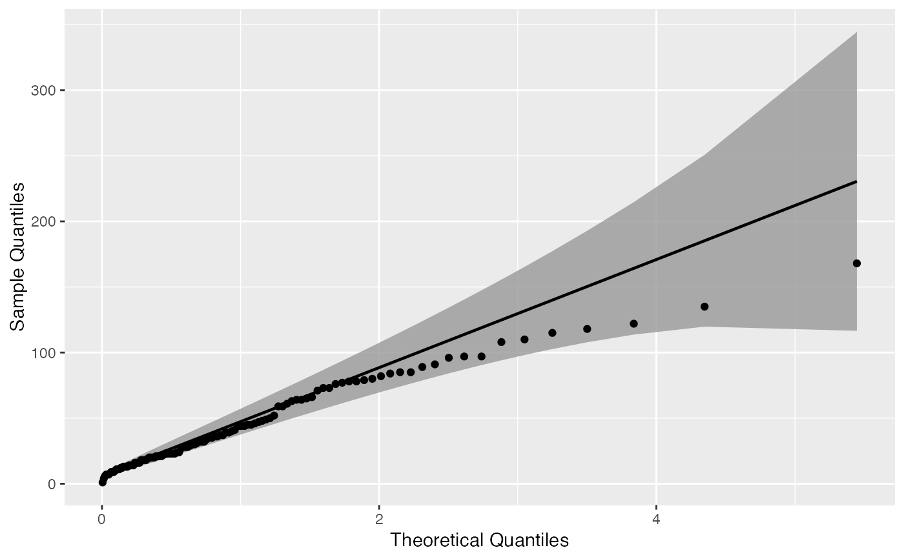
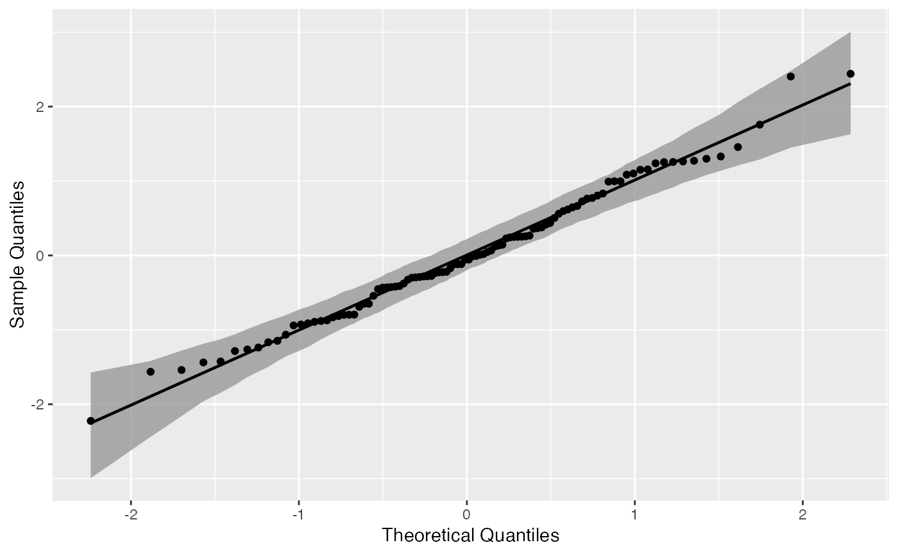

Draws quantile-quantile confidence bands, with an additional detrend option.
geom_qq_band(mapping = NULL, data = NULL, stat = "qq_band", position = "identity", na.rm = TRUE, show.legend = NA, inherit.aes = TRUE, distribution = "norm", dparams = list(), detrend = FALSE, identity = FALSE, qtype = 7, qprobs = c(0.25, 0.75), bandType = "pointwise", B = 1000, conf = 0.95, mu = NULL, sigma = NULL, ...) stat_qq_band(mapping = NULL, data = NULL, geom = "qq_band", position = "identity", na.rm = TRUE, show.legend = NA, inherit.aes = TRUE, distribution = "norm", dparams = list(), detrend = FALSE, identity = FALSE, qtype = 7, qprobs = c(0.25, 0.75), bandType = "pointwise", B = 1000, conf = 0.95, mu = NULL, sigma = NULL, ...)
| mapping | Set of aesthetic mappings created by |
|---|---|
| data | The data to be displayed in this layer. There are three options: If A A |
| stat | statistic to use to calculate confidence bands. Should be `qq_band`. |
| position | Position adjustment, either as a string, or the result of a call to a position adjustment function. |
| na.rm | If |
| show.legend | logical. Should this layer be included in the legends?
|
| inherit.aes | If |
| distribution | Character. Theoretical probability distribution function
to use. Do not provide the full distribution function name (e.g.,
|
| dparams | List of additional parameters passed on to the previously
chosen |
| detrend | Logical. Should the plot objects be detrended? If |
| identity | Logical. Should an identity line be used as the reference
line used to construct the confidence bands? If |
| qtype | Integer between 1 and 9. Type of the quantile algorithm to be
used by the |
| qprobs | Numeric vector of length two. Represents the quantiles used by
the |
| bandType | Character. Either |
| B | Integer. If |
| conf | Numerical. Confidence level of the bands. |
| mu | Numerical. Only used if |
| sigma | Numerical. Only used if |
| ... | Other arguments passed on to |
| geom | The geometric object to use display the data |
Tail-sensitive confidence bands are only implemented for Normal Q-Q plots. As a future update, we intend to generalize to other distributions.
Bootstrap bands are constructed based on a MLE parametric bootstrap. Hence, it is not possible to construct such bands if the sample and theoretical distributions present mismatching supports.
# generate random Normal data set.seed(0) smp <- data.frame(norm = rnorm(100)) # Normal Q-Q plot of Normal data gg <- ggplot(data = smp, mapping = aes(sample = norm)) + stat_qq_band() + stat_qq_line() + stat_qq_point() gg + labs(x = "Theoretical Quantiles", y = "Sample Quantiles")# Exponential Q-Q plot of mean ozone levels (airquality dataset) di <- "exp" dp <- list(rate = 1) gg <- ggplot(data = airquality, mapping = aes(sample = Ozone)) + stat_qq_band(distribution = di, dparams = dp) + stat_qq_line(distribution = di, dparams = dp) + stat_qq_point(distribution = di, dparams = dp) + labs(x = "Theoretical Quantiles", y = "Sample Quantiles") gg# Detrended Exponential Q-Q plot of mean ozone levels di <- "exp" dp <- list(rate = 1) de <- TRUE gg <- ggplot(data = airquality, mapping = aes(sample = Ozone)) + stat_qq_band(distribution = di, detrend = de) + stat_qq_line(distribution = di, detrend = de) + stat_qq_point(distribution = di, detrend = de) + labs(x = "Theoretical Quantiles", y = "Sample Quantiles") gg# Normal Q-Q plot of Normal data with boostrap confidence bands bt <- "boot" gg <- ggplot(data = smp, mapping = aes(sample = norm)) + stat_qq_band(bandType = bt) + stat_qq_line() + stat_qq_point() + labs(x = "Theoretical Quantiles", y = "Sample Quantiles") gg# Normal Q-Q plot of Normal data with tail-sensitive confidence bands bt <- "ts" gg <- ggplot(data = smp, mapping = aes(sample = norm)) + stat_qq_band(bandType = bt) + stat_qq_line() + stat_qq_point() + labs(x = "Theoretical Quantiles", y = "Sample Quantiles") gg